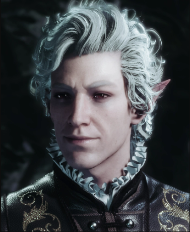

Астарион Анкуни́н (англ. Astarion Ancunín) — персонаж с предысторией и один из возможных компаньонов в Baldur's Gate III.
Поскольку он является одним из игровых персонажей, игрок может выбрать Астариона в качестве главного героя, в ином случае его можно завербовать как компаньона. Также доступен в качестве любовного интереса для протагониста любого пола и расы.